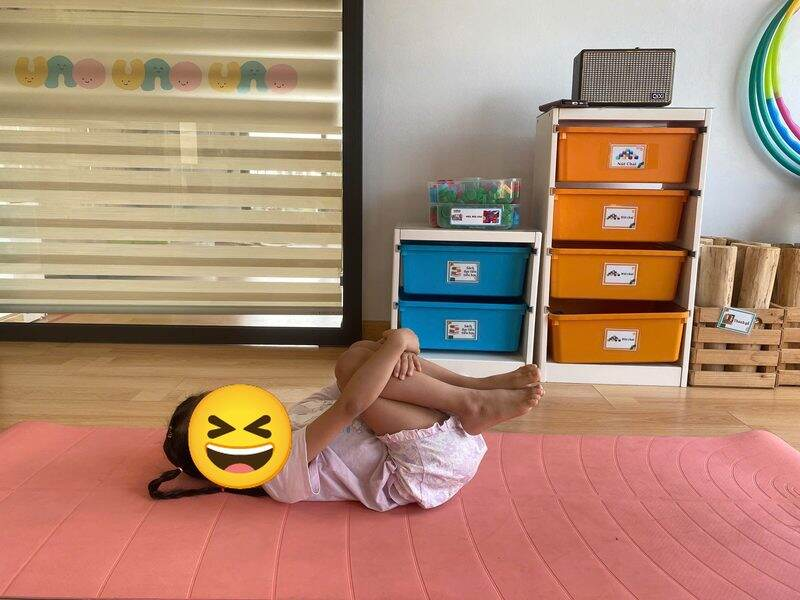

Chủ đề 4 · Ngày Phụ nữ Việt Nam 20/10
Bông hoa tặng mẹ ngày 20/10
🌟 Bài học trong câu chuyện
Giới luật yoga: Satya – Trung thực, nói thật. Bé dám nói thật, kể cả khi mình làm sai.
Kỹ năng sống: Nói lời yêu thương, nhận lỗi khi làm sai.
1. Khởi động (2 phút)
Cả lớp ngồi xếp bằng thành vòng tròn. Cùng thở 3 hơi thở bông hoa: hít vào bằng mũi như ngửi hoa, thở ra bằng miệng thật chậm. Chắp tay trước ngực và chào nhau: “Namaste, chào các bạn!”
2. Câu chuyện: Bông hoa tặng mẹ ngày 20/10 (đọc cho bé nghe, 4 phút)
Cô đọc trọn câu chuyện cho bé nghe trước. Sau đó cô kể lại từng đoạn ngắn và cả lớp cùng tập 10 tư thế ở phần bên dưới.
Sắp đến ngày 20 tháng 10, ngày của bà, của mẹ và các cô. Bé Bin muốn tự tay chuẩn bị một món quà thật đẹp tặng mẹ. Bin nghĩ mãi rồi reo lên: "Mẹ thích hoa nhất!"
Một chú chim bồ câu đậu trên cửa sổ, gù gù: "Mẹ bạn thích hoa hồng ngoài vườn đấy". Bin ôm ngực, thấy trái tim mình ấm áp vì thương mẹ. Bin nhớ sáng nào mẹ cũng mặc áo dài đi làm, tà áo bay trong gió thật đẹp. Bin lấy chiếc nón lá của bà để đựng hoa rồi chạy ra vườn.
Mải hái hoa, Bin vô tình làm gãy một cành cây mà mẹ đã chăm tưới mỗi ngày. Bin cúi xuống nhìn cành cây gãy, lo lắng quá: "Mẹ sẽ buồn mất. Hay mình giấu đi, không nói?"
Bin vẫn bó được một bó hoa thật to, thật đẹp. Nhưng trong lòng Bin cứ thấy nặng trĩu. Một chú bướm bay đến, đậu lên bó hoa và thì thầm: "Nói thật với mẹ đi, lòng bạn sẽ nhẹ như cánh bướm".
Mẹ về, Bin chạy ra ôm mẹ, tặng bó hoa rồi nói: "Mẹ ơi, con lỡ làm gãy cành cây của mẹ. Con xin lỗi mẹ". Mẹ ngồi xuống, ôm Bin vào lòng: "Cảm ơn con đã nói thật. Cành cây gãy rồi sẽ mọc lại, còn con trung thực là món quà mẹ thích nhất". Bin cười tươi, lòng nhẹ tênh như cánh bướm.
3. Kể lại và tập 10 tư thế (6 phút)
-
 1
1Bông hoa tặng mẹ
🧘 Tư thế Hoa sen (Lotus)
Lời kể khi tập: Bin nghĩ: mẹ thích hoa nhất! Mình làm bông hoa sen, các ngón tay xòe ra như cánh hoa.
Cách làm: Ngồi xếp bằng, lưng thẳng, hai tay đặt trên gối, ngón cái chạm ngón trỏ như búp sen, thở thật chậm. Giữ 3 đến 5 nhịp thở.
-
 2
2Chim bồ câu
🧘 Tư thế Bồ câu (Pigeon)
Lời kể khi tập: Một chú chim bồ câu bay qua cửa sổ, hót: "Gù gù, mẹ thích hoa hồng đấy!"
Cách làm: Ngồi, co một chân ra trước, chân kia duỗi thẳng ra sau, từ từ cúi người xuống, hai tay duỗi dài trên thảm như chú chim bồ câu đang nghỉ. Giữ 3 đến 5 nhịp thở.
-
💖Ảnh tư thế đang cập nhật3
Trái tim yêu thương
🧘 Tư thế Lạc đà (Camel)
Lời kể khi tập: Bin mở rộng ngực như trái tim thật to. "Con thương mẹ nhiều!"
Cách làm: Quỳ đứng, hai tay chống hông, nhẹ nhàng ưỡn ngực và nhìn lên trần nhà. Giữ 3 đến 5 nhịp thở.
-
🌸Ảnh tư thế đang cập nhật4
Áo dài tung bay
🧘 Tư thế Vũ công (Dancer)
Lời kể khi tập: Bin nhìn mẹ mặc áo dài đi làm, tà áo bay trong gió. Mình làm vũ công thật duyên dáng.
Cách làm: Đứng một chân, tay cầm cổ chân kia kéo nhẹ ra sau, tay còn lại vươn ra trước. Bé có thể vịn tường. Giữ 3 đến 5 nhịp thở.
-
 5
5Nón lá
🧘 Tư thế Tam giác (Triangle)
Lời kể khi tập: Bin lấy chiếc nón lá của bà để đựng hoa. Mình làm hình tam giác như chiếc nón lá.
Cách làm: Dang rộng hai chân, một tay chạm ống chân, tay kia vươn thẳng lên trời. Đổi bên. Giữ 3 đến 5 nhịp thở.
-
 6
6Mẹ tưới cây
🧘 Tư thế Gập người đứng (Forward Fold)
Lời kể khi tập: Bin ra vườn hái hoa, vô tình làm gãy cành cây mẹ trồng. Bin cúi xuống, lo lắng...
Cách làm: Đứng, gối hơi chùng, cúi gập người, hai tay buông thả xuống sàn. Giữ 3 đến 5 nhịp thở.
-
🌸Ảnh tư thế đang cập nhật7
Bó hoa lớn
🧘 Tư thế Nữ thần (Goddess)
Lời kể khi tập: Bin vẫn bó hoa thật to. Nhưng trong lòng Bin cứ thấy không yên.
Cách làm: Dang rộng hai chân, mũi chân hướng ra ngoài, gập gối, hai tay mở rộng hai bên. Giữ 3 đến 5 nhịp thở.
-
 8
8Con bướm
🧘 Tư thế Con bướm (Butterfly)
Lời kể khi tập: Chú bướm bay đến thì thầm: "Nói thật với mẹ đi, lòng bạn sẽ nhẹ như cánh bướm". Mình vỗ cánh bướm nào!
Cách làm: Ngồi, áp hai lòng bàn chân vào nhau, hai gối mở sang hai bên, tay dang như cánh hoặc nắm bàn chân, gối đập nhẹ như cánh bướm. Giữ 3 đến 5 nhịp thở.
-

9Bé ôm mẹ
🧘 Tư thế Ôm gối (Knees to Chest)
Lời kể khi tập: Bin tặng hoa và nói thật: "Mẹ ơi, con lỡ làm gãy cành cây, con xin lỗi mẹ".
Cách làm: Nằm ngửa, ôm hai gối vào ngực, lắc lư nhẹ sang hai bên. Giữ 3 đến 5 nhịp thở.
-
🌸Ảnh tư thế đang cập nhật10
Vòng tay của mẹ
🧘 Tư thế Em bé vui (Happy Baby)
Lời kể khi tập: Mẹ ôm Bin: "Cảm ơn con đã nói thật. Mẹ vui nhất vì con trung thực". Mình lắc lư cười thật tươi!
Cách làm: Nằm ngửa, co hai chân lên, tay nắm bàn chân, lắc lư qua lại. Giữ 3 đến 5 nhịp thở.
4. Thư giãn (2 phút)
Các con nằm ngửa, tay chân thả lỏng, nhắm mắt lại. Cô nói nhẹ: “Hít vào thật chậm… thở ra thật chậm… Con nhớ lại câu chuyện vừa rồi, nhớ người bạn mình thích nhất trong truyện. Cơ thể con mềm như bông, nhẹ như mây.” Sau đó các con nghiêng người, từ từ ngồi dậy.
5. Trò chuyện cùng bé (1 phút)
Bin dám nói thật với mẹ dù đã làm sai, và mẹ còn vui hơn cả khi nhận hoa. Đó là Satya, trung thực.
Cô hỏi các con:
- Khi lỡ làm sai, con sẽ làm gì?
- Ngày 20/10 con muốn tặng ai, tặng gì?
Kết thúc bằng lời chào “Namaste” và một nụ cười.
Lưu ý cho thầy cô và bố mẹ: Tập trên thảm, không tập ngay sau khi ăn no. Bé chỉ làm tới mức thấy dễ chịu, không ép bé. Tư thế đứng một chân có thể cho bé vịn tường hoặc vịn tay người lớn.